Vontela Sanjay Kumar
Mango Leaf Disease Prediction
Overview
In this experiment I built an image classifier using deep learning techniques to classify images based on their disease. Deep learning is a subset of Machine Learning that uses neural networks to solve complex problems. It uses multiple layers of neurons to extract data from large datasets.

There are 4 types of Deep learning. They are:
1.Convolution Neural Networks(CNN): This type of network are mainly used for image and video recognition tasks.
2.Recurrent Neural Networks(RNN): RNN is used to process sequential data by using feedback loops.
3. Generative Adversarial Networks(GAN): GAN is used to generate new data that is similar to given dataset. In this two neural networks are pitted against each other where one generate data from noise and the other classifies the data original or fake.
4. Reinforcement Learning: Reinforcement Learning is used for training models to make decision in real time environments. In this the model learns from punishments and rewards in the training environment.
In this experiment I have used Convolution Neural Networks(CNN) to classify the images.

CNN consists of many layers they are Convolution Layer, Pooling Layer, Activation Layer, Fully Connected Layer, Flatten Layer. In Classification problems the CNN model starts with Convolution layer and ends with Fully Connected layer
1.Convolution layer: It is the building block of any CNN model. In convolution layer it multiplies the image with a kernal of desired size (3x3, 5x5, 7x7). Suppose the Image is 250X250 then it multiplies first 3x3 of 250x250 with kernel and slides over a element to the left. Doing this to the total image creates a feature map.
2.Pooling Layer: It is used to reduce the dimensionality of the feature map produced by convolution layer. There are 2 types of pooling Average pooling and Max pooling. In average pooling it takes the average of sub region created by pooling, in max pooling it takes the maximum value of sub region.
3. Activation Layer: Activation function applies non-linear function to the output of the previous layer. It allows the model to learn complex relationships between input data and output. Common activation functions are RELU, SIGMOID, TANH, SOFTMAX.
4. Flatten Layer: It converts the multi-dimensional feature map of the previous layer to one-dimensional array and feed it forward to the fully connected layer.
5. Fully Connected Layer: In this each neuron is connected to every neuron in the previous layer. It is typically used at the end of cnn model to perform classification(Image Classification) or regression(Object Detection).
Import Libraries
The first thing is importing libraries. The main libraries I have used are numpy, opencv, os, glob, random, pandas, tqdm, tensorflow,seaborn, matplotlib, scikit-learn
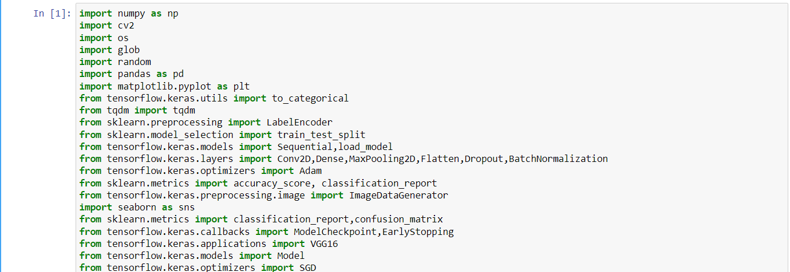Importing data
For importing data first I have saved the paths of every image and class name to a dataframe and using the dataframe I loaded the data into an array. After loading the next thing is to One-Hot encoding the labels.
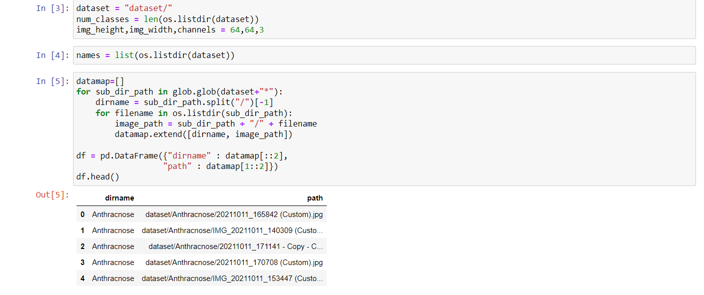All the images in the dataset are of different sizes to I used cv2.resize method and changed the size to 64x64.
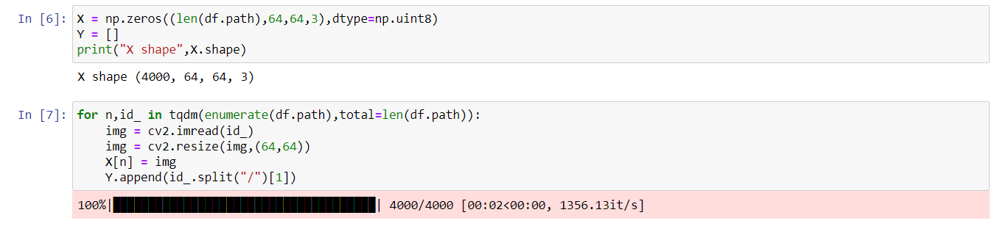One-Hot Encoding
The next step is converting the labels to numbers and then the numbers to categorical data. To do this I have used LabelEncoder to convert to numbers and to_categorical method from keras to do One-Hot encoding i.e, categorical data.
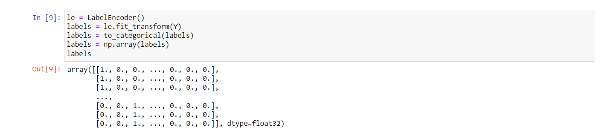Plotting the dataset
For plotting data I have used subplots from matplotlib library and randint method from random library to select a random image.
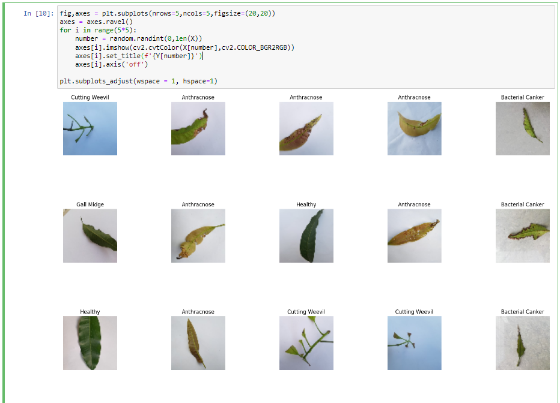Splitting Data
The next step is to split the data into 3 categories Training data, validation data, testing data. Training and validation data are used during training of the model and testing data is used to test the data with unknown values. Validation data is used during training to check the performance of model in each epoch.
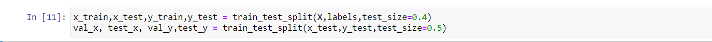Model Building
For this problem I have used 5 models.
Model 1
The first model consists of 2 convolution layers followed by a pooling layer with size 2x2. For second block, a convolution layer followed by a batch normalization layer, followed by a convolution layer and a max pooling layer. For 3rd block, same as 2nd block. For 4th block 2 convolution layers followed by a batch normalization layer and pooling layers. After that the model is connected to fully connected layers. For convolution layers I have used relu as an activation function and softmax for output layer.
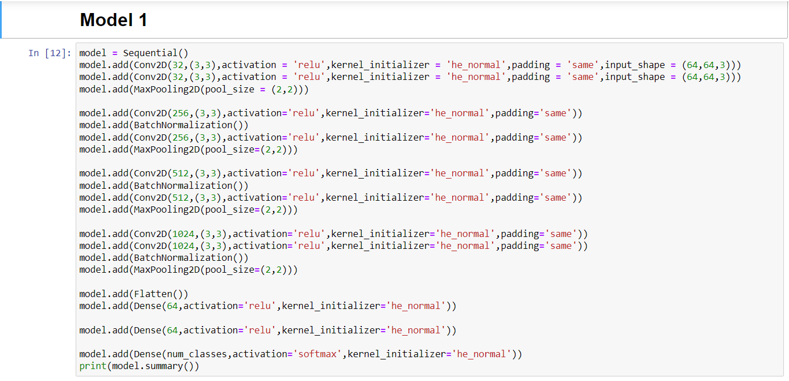For model 1 I got an accuracy of 89.375% on test data. Here are the plots for model 1
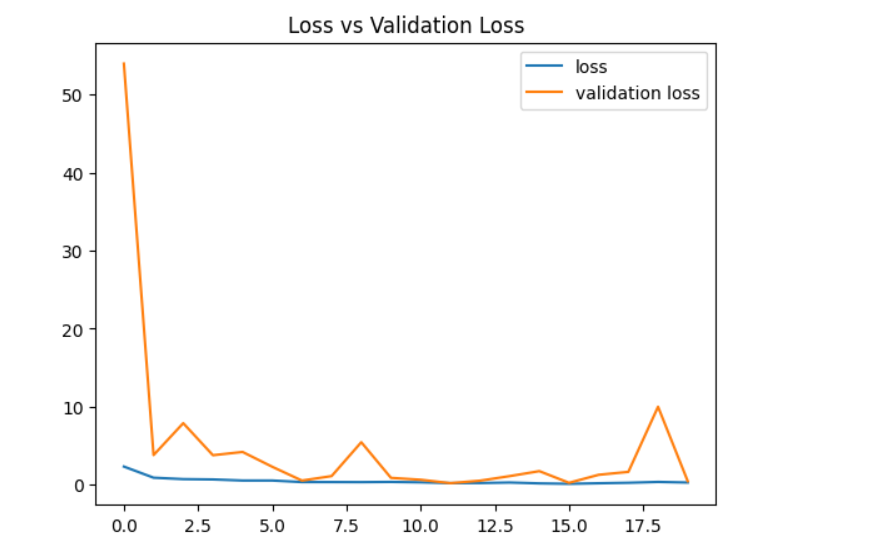 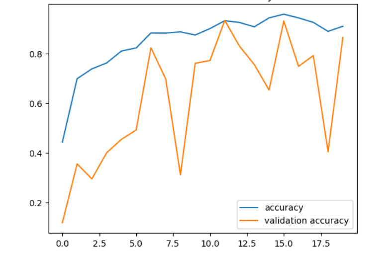 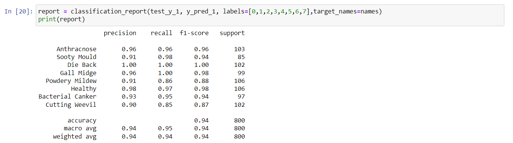 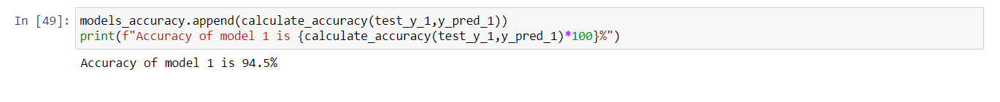Model 2
Model 2 consists of 4 blocks in the first block there is there are 2 convolution layers followed by a maxpooling layer. It is same for all 4 blocks then the model is connected to a 3 fully connected layers. The main difference between model 1 and model 2 is that there is no batch normalization in model 2. Without batch normalization the model 2 got accuracy of 93.5% on test data.
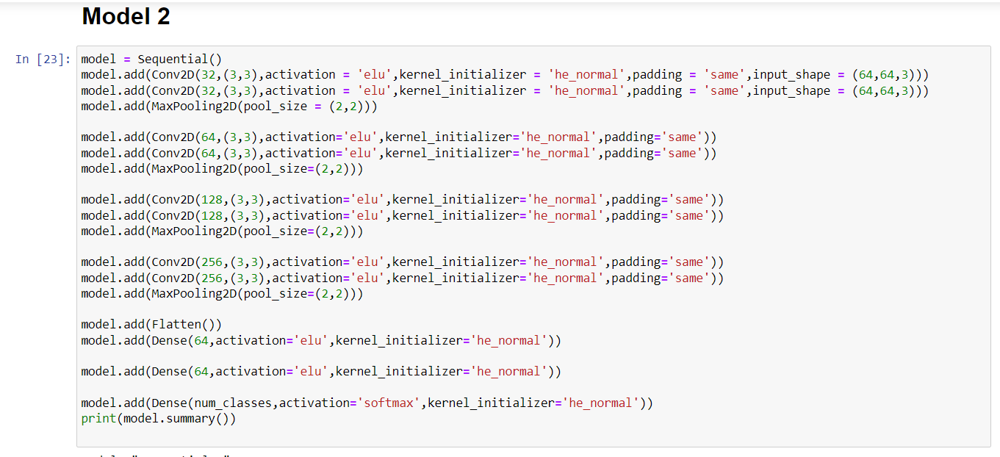 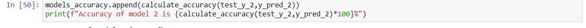 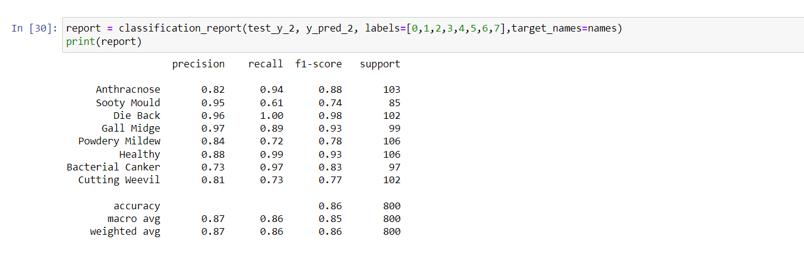 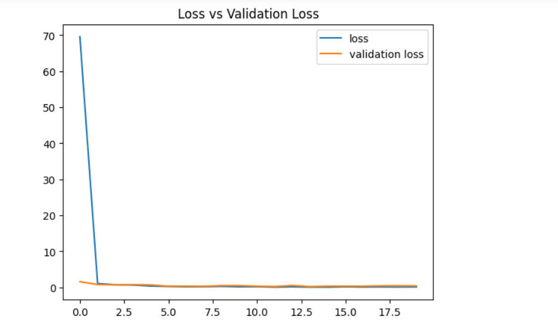 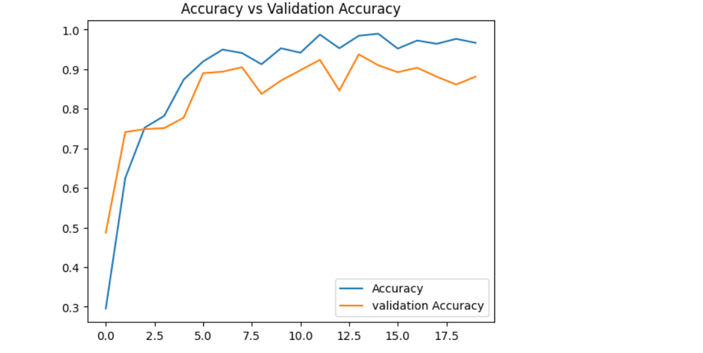Model 3
For model 3 I have transfer learning. Transfer learning is a technique in which a pre-trained model usually on a larger data is used as a starting point for a new task. VGG16 model is used for model as a starting point. In this first I froze the trainable layers and added the bottom layers i.e, from flatten layers to fullu connected layers. Using transfer learning I got an accuracy of 92.25%
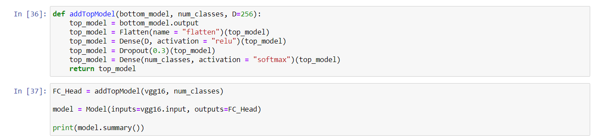 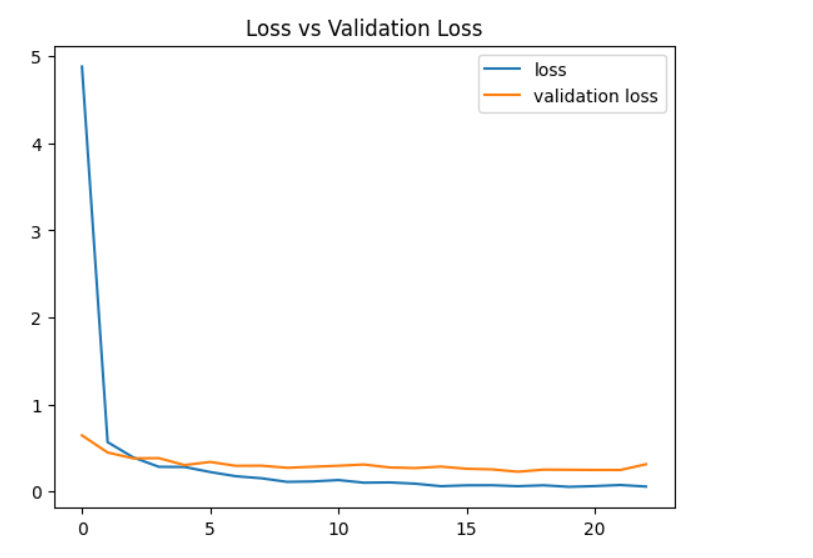 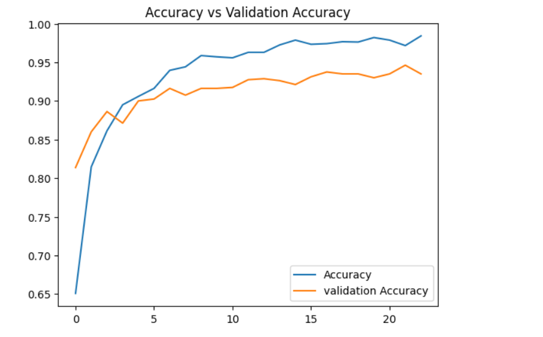 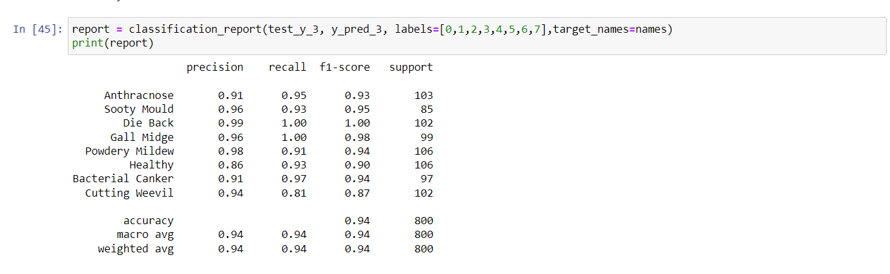
KNN and Random Forest
KNN operates by identifying the K data points in a dataset that are the closest to a new data point, and then predicting the class or value of the new data point based on the classes or values of its K nearest neighbors. Random Forest uses multiple decision trees to make predictions by combining the results of those trees. Decision trees work by recursively splitting the data into smaller and smaller parts. I got an accuracy of 57.5% in knn and 63.35 in random forest.
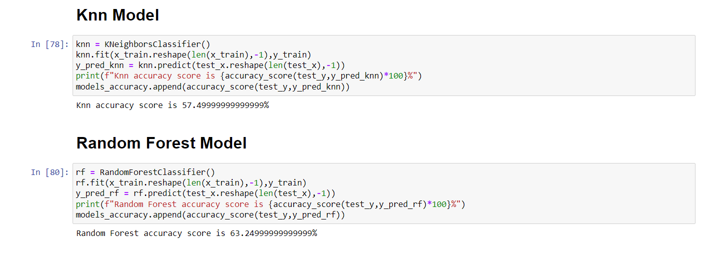All Models Accuracy
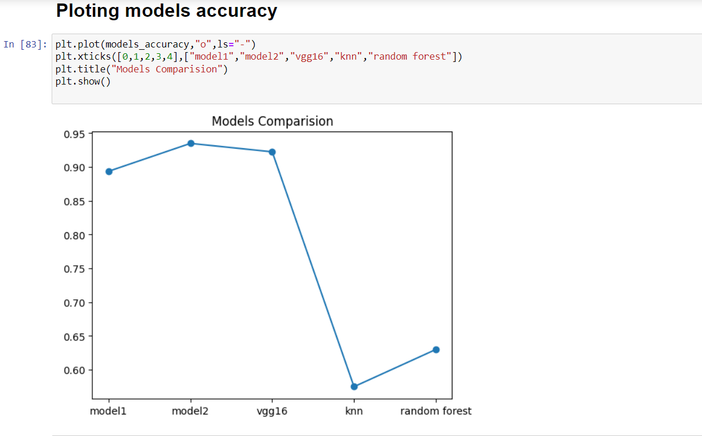References:
1.https://towardsdatascience.com/feature-encoding-techniques-in-machine-learning-with-pythonimplementation-dbf933e64aa.
2. https://www.javatpoint.com/training-of-cnn-in-tensorflow.
My Contribution
1. I have developed an CNN model using Tensorflow .
2. I have Fine tuned model’s hyperparameters such as number of epochs, image size, number of neurons, early stopping to optimize its accuracy.
3. Compared the accuracy of all models.
Challenges:
1. The main challenge I have faced is selecting a best hyper parameters for the model.
2. Choosing the right architecture is also very important. There are different architectures for cnn and choosing the right architecture is very challenging.
Reference
- https://towardsdatascience.com/feature-encoding-techniques-in-machine-learning-with-pythonimplementation-dbf933e64aa.
- https://www.javatpoint.com/training-of-cnn-in-tensorflow.